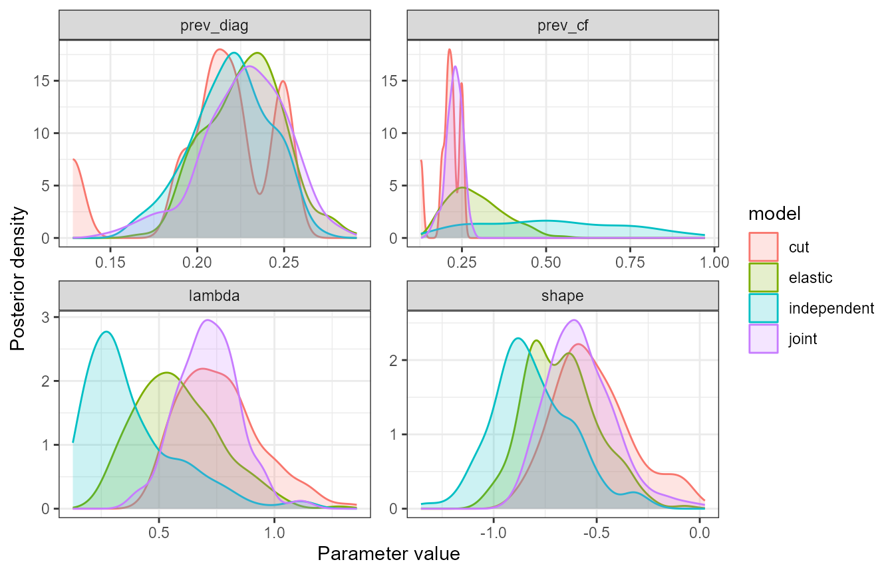
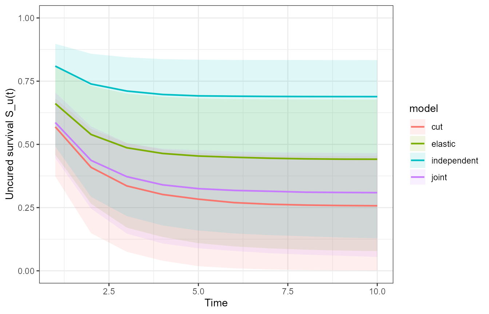
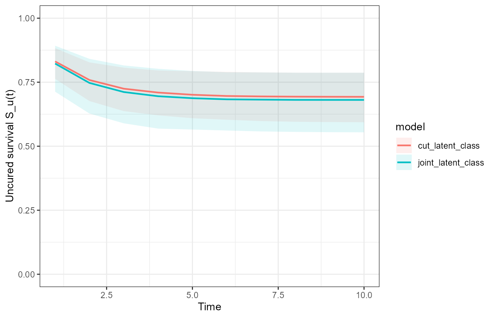

3. UK PREDICT-TB Case Studies: Reconstructed Survival & Linked Migrant Cohort
Source:vignettes/predict-tb-case-studies.Rmd
predict-tb-case-studies.RmdOverview
The UK PREDICT-TB study (Abubakar et al., 2018) evaluated latent tuberculosis infection (LTBI) screening and subsequent progression to active TB among recent migrants and TB contacts in the UK. Depending on data access, researchers typically encounter two different data structures from this study:
-
Case Study A — Published Aggregate Positivity +
Reconstructed Kaplan-Meier IPD
(
load_abubakar_2018()): From the published paper, we observe the aggregate baseline IGRA positivity count (\(y = 1444\) positive out of \(n = 6380\) participants) together with pseudo-individual survival times \((t_i, d_i)_{i=1}^{6380}\) reconstructed by digitizing the published Kaplan-Meier curve (scripts/reconstruct-progression-data.R). Because the digitized survival curve does not link individual test outcomes \(x_i\) to individual times \(t_i\), this is an unlinked two-module synthesis problem. -
Case Study B — Linked Individual-Level Migrant Cohort
(
load_predict_migrant()): In the individual-level migrant sub-cohort extract (cleaned_migrant_predict_data.RData), each participant \(i\) has a linked baseline test result \(x_i \in \{0, 1\}\), follow-up time \(t_i\), active TB progression indicator \(d_i \in \{0, 1\}\), and demographic covariates (age,age_z,ethnicity). This enables individual-level latent-class coupling and covariate regression.
Mathematical Formulation
Case Study A: Unlinked Aggregate Survey + Reconstructed Survival Cohort
Let \(y = 1444\) and \(n = 6380\) denote the aggregate IGRA positivity data in Module 1, and let \((t_i, d_i)_{i=1}^{N_{\text{surv}}}\) denote the digitized progression times in Module 2. With imperfect IGRA sensitivity and specificity (\(\text{sens} \sim \text{Beta}(a_{\text{sens}}, b_{\text{sens}})\), \(\text{spec} \sim \text{Beta}(a_{\text{spec}}, b_{\text{spec}})\)) and a Gompertz uncured progression hazard \(h_u(t) = \lambda e^{\gamma t}\):
\[ \begin{aligned} y &\sim \text{Binomial}\!\left(n, \, \pi_{\text{diag}} \, \text{sens} + (1 - \pi_{\text{diag}})(1 - \text{spec})\right), \\[4pt] L_2(t_i, d_i \mid \pi_{\text{surv}}, \lambda, \gamma) &= \left[ \pi_{\text{surv}} \, \lambda e^{\gamma t_i} \exp\!\left(-\frac{\lambda}{\gamma}(e^{\gamma t_i} - 1)\right) \right]^{d_i} \left[ (1 - \pi_{\text{surv}}) + \pi_{\text{surv}} \exp\!\left(-\frac{\lambda}{\gamma}(e^{\gamma t_i} - 1)\right) \right]^{1 - d_i}. \end{aligned} \]
Because active TB progression events in the full cohort are rare
(~1.5% over 5 years) and follow-up is heavily right-censored around 4–5
years, fitting Module 2 alone (model = "independent")
cannot separately identify the cure fraction \(1 - \pi_{\text{surv}}\) and the Gompertz
shape parameter \(\gamma < 0\)
(which governs how quickly the progression hazard decays over time).
Linking Module 1 and Module 2 via "cut",
"joint", or "elastic" anchors the uncured
fraction \(\pi\) using the diagnostic
test data, allowing the survival curve \(S_u(t)\) among LTBI-positive individuals to
be identified.
Case Study B: Linked Individual-Level Migrant Cohort with Covariates
In the linked migrant cohort, each participant \(i\) has baseline age \(a_i\) (standardized as \(\text{age}_{z,i}\)), baseline test result \(x_i \in \{0, 1\}\), and survival outcome \((t_i, d_i)\). Individual baseline LTBI prevalence is modeled as:
\[ \text{logit}(\pi_i) = \alpha + \beta_{\text{age}} \, \text{age}_{z,i}. \]
Under individual-level latent-class coupling
(coupling = "latent_class"), each participant’s latent
infection status \(Z_i \sim
\text{Bernoulli}(\pi_i)\) jointly governs \(x_i\) and \((t_i,
d_i)\):
\[ L_i(x_i, t_i, d_i) = \begin{cases} \pi_i \, \text{sens}^{x_i} (1 - \text{sens})^{1 - x_i} \, f_u(t_i \mid \lambda, \gamma) & \text{if } d_i = 1, \\[4pt] (1 - \pi_i) (1 - \text{spec})^{x_i} \text{spec}^{1 - x_i} + \pi_i \, \text{sens}^{x_i} (1 - \text{sens})^{1 - x_i} \, S_u(t_i \mid \lambda, \gamma) & \text{if } d_i = 0. \end{cases} \]
Worked Analysis: Case Study A (Reconstructed Abubakar 2018 Data)
library(EvidSynthTB)
library(dplyr)
library(ggplot2)
abub <- load_abubakar_2018()
abub$prevalence_data
#> # A tibble: 1 × 5
#> y n test_id mu_hat sigma_hat
#> <int> <int> <int> <dbl> <dbl>
#> 1 1444 6380 1 -1.23 0.0299
head(abub$progression_data)
#> # A tibble: 6 × 2
#> t d
#> <dbl> <int>
#> 1 0.0601 1
#> 2 0.0601 1
#> 3 0.0601 1
#> 4 0.0601 1
#> 5 0.0601 1
#> 6 0.0601 1For computational speed in this vignette, we take a stratified
subsample including all observed active TB events (\(d_i = 1\)) and a weighted sample of
censored observations (in a full analysis, as in
scripts/script_Stan.R, pass
abub$progression_data directly):
set.seed(501)
events_df <- dplyr::filter(abub$progression_data, d == 1L)
cens_df <- dplyr::slice_sample(dplyr::filter(abub$progression_data, d == 0L), n = 450)
prog_sub <- dplyr::bind_rows(events_df, cens_df)
comp_abub <- compare_evidsynth(
prevalence_data = abub$prevalence_data,
progression_data = prog_sub,
models = c("cut", "joint", "independent", "elastic"),
imperfect_test = TRUE,
surv_dist = "gompertz",
t_lim = 10,
chains = 1,
n_iter = 400,
n_burnin = 200,
n_cut_subsamples = 8,
seed = 501
)
knitr::kable(comp_abub$summary_table, digits = 3)| model | variable | mean | median | sd | mad | q5 | q95 | rhat | ess_bulk | ess_tail |
|---|---|---|---|---|---|---|---|---|---|---|
| cut | prev_diag | 0.210 | 0.215 | 0.036 | 0.025 | 0.128 | 0.250 | 1.087 | 10.471 | NA |
| cut | prev_cf | 0.210 | 0.215 | 0.036 | 0.025 | 0.128 | 0.250 | 1.087 | 10.471 | NA |
| cut | ppv_cf | 0.780 | 0.790 | 0.137 | 0.113 | 0.498 | 0.962 | 1.029 | 11.012 | NA |
| cut | lambda | 0.765 | 0.746 | 0.176 | 0.174 | 0.523 | 1.110 | 1.005 | 26.671 | 94.012 |
| cut | shape | -0.515 | -0.548 | 0.192 | 0.176 | -0.799 | -0.138 | 1.038 | 23.582 | 27.271 |
| cut | sens[1] | 0.845 | 0.845 | 0.031 | 0.029 | 0.792 | 0.892 | 1.232 | 9.384 | NA |
| cut | spec[1] | 0.938 | 0.939 | 0.036 | 0.030 | 0.868 | 0.989 | 1.029 | 11.012 | NA |
| joint | prev_diag | 0.227 | 0.229 | 0.024 | 0.024 | 0.181 | 0.263 | 1.002 | 58.407 | 50.106 |
| joint | prev_cf | 0.227 | 0.229 | 0.024 | 0.024 | 0.181 | 0.263 | 1.002 | 58.407 | 50.106 |
| joint | ppv_cf | 0.843 | 0.857 | 0.075 | 0.068 | 0.673 | 0.936 | 1.004 | 64.454 | 41.613 |
| joint | lambda | 0.714 | 0.707 | 0.133 | 0.132 | 0.515 | 0.934 | 1.024 | 72.969 | 132.608 |
| joint | shape | -0.578 | -0.594 | 0.163 | 0.157 | -0.804 | -0.282 | 1.034 | 95.175 | 129.321 |
| joint | sens[1] | 0.842 | 0.843 | 0.036 | 0.038 | 0.776 | 0.893 | 1.005 | 132.342 | 92.999 |
| joint | spec[1] | 0.955 | 0.959 | 0.020 | 0.019 | 0.912 | 0.980 | 1.013 | 66.415 | 41.613 |
| independent | prev_diag | 0.219 | 0.220 | 0.022 | 0.022 | 0.179 | 0.253 | 1.003 | 137.634 | 118.977 |
| independent | prev_cf | 0.519 | 0.505 | 0.211 | 0.257 | 0.204 | 0.859 | 0.998 | 58.921 | 93.294 |
| independent | ppv_cf | 0.927 | 0.952 | 0.065 | 0.048 | 0.799 | 0.992 | 1.002 | 69.485 | 118.952 |
| independent | lambda | 0.383 | 0.316 | 0.205 | 0.160 | 0.162 | 0.770 | 0.999 | 59.651 | 114.734 |
| independent | shape | -0.810 | -0.834 | 0.194 | 0.173 | -1.091 | -0.484 | 0.996 | 128.075 | 112.891 |
| independent | sens[1] | 0.849 | 0.850 | 0.035 | 0.036 | 0.788 | 0.905 | 1.006 | 92.593 | 57.981 |
| independent | spec[1] | 0.948 | 0.951 | 0.021 | 0.021 | 0.910 | 0.977 | 1.015 | 165.379 | 154.496 |
| elastic | prev_diag | 0.228 | 0.229 | 0.022 | 0.023 | 0.193 | 0.262 | 0.998 | 80.510 | 119.766 |
| elastic | prev_cf | 0.293 | 0.278 | 0.082 | 0.081 | 0.182 | 0.452 | 1.021 | 75.923 | 35.561 |
| elastic | ppv_cf | 0.880 | 0.888 | 0.058 | 0.064 | 0.775 | 0.960 | 1.009 | 109.900 | 94.870 |
| elastic | lambda | 0.581 | 0.565 | 0.183 | 0.186 | 0.321 | 0.923 | 1.007 | 74.886 | 72.103 |
| elastic | shape | -0.671 | -0.675 | 0.172 | 0.185 | -0.921 | -0.365 | 1.006 | 107.417 | 45.888 |
| elastic | sens[1] | 0.846 | 0.853 | 0.038 | 0.037 | 0.769 | 0.900 | 1.022 | 106.674 | 84.388 |
| elastic | spec[1] | 0.956 | 0.957 | 0.017 | 0.018 | 0.927 | 0.981 | 0.997 | 120.010 | 129.321 |
knitr::kable(diagnose_feedback(comp_abub), digits = 3)| model | prev_diag_mean | prev_diag_sd | prev_cf_mean | prev_cf_sd | feedback_shift | conflict_diff_median | conflict_prob_pos | waic_surv | elpd_waic | p_waic |
|---|---|---|---|---|---|---|---|---|---|---|
| cut | 0.210 | 0.036 | 0.210 | 0.036 | 0.000 | 0.000 | 0.000 | 548.795 | -274.397 | 2.325 |
| joint | 0.227 | 0.024 | 0.227 | 0.024 | 0.017 | 0.000 | 0.000 | 547.652 | -273.826 | 1.794 |
| independent | 0.219 | 0.022 | 0.519 | 0.211 | 0.009 | 0.287 | 0.940 | 549.514 | -274.757 | 2.172 |
| elastic | 0.228 | 0.022 | 0.293 | 0.082 | 0.018 | 0.061 | 0.765 | 548.309 | -274.154 | 1.860 |
plot_model_comparison(
comp_abub,
variables = c("prev_diag", "prev_cf", "lambda", "shape")
)
plot_survival_comparison(comp_abub, type = "uncured")
Notice that the Gompertz shape parameter \(\gamma\) (shape) is estimated
to be negative, reflecting the biological reality that the hazard of
progressing from LTBI to active TB is highest in the first 1–2 years
after entry/screening and decays exponentially thereafter.
Worked Analysis: Case Study B (Linked PREDICT-TB Migrant Cohort)
migrant <- load_predict_migrant()
glimpse(migrant$progression_data)
#> Rows: 4,560
#> Columns: 7
#> $ t <dbl> 3.928816, 3.652293, 5.232033, 3.904175, 6.047912, 3.603012, …
#> $ d <int> 0, 0, 0, 0, 0, 0, 0, 0, 0, 0, 0, 0, 0, 0, 0, 0, 0, 0, 0, 0, …
#> $ x <int> 0, 0, 1, 1, 0, 0, 0, 0, 1, 0, 0, 0, 0, 0, 0, 0, 0, 1, 0, 0, …
#> $ x1 <int> 0, 0, 1, 1, 0, 0, 0, 0, 1, 0, 0, 0, 0, 0, 0, 0, 0, 1, 0, 0, …
#> $ age <dbl> 39, 25, 22, 37, 23, 60, 31, 61, 51, 32, 63, 37, 53, 33, 30, …
#> $ age_z <dbl> 0.01730446, -0.84373739, -1.02824635, -0.10570152, -0.966743…
#> $ ethnicity <fct> "Black other, Chinese or other", "Bangladeshi", "Bangladeshi…We compare individual-level "latent_class" coupling
against "population" coupling and the two-stage
"cut" model on a stratified subsample of the linked migrant
cohort with standardized age (age_z) as a baseline
covariate:
set.seed(601)
mig_events <- dplyr::filter(migrant$progression_data, d == 1L)
mig_cens <- dplyr::slice_sample(dplyr::filter(migrant$progression_data, d == 0L), n = 400)
mig_sub <- dplyr::bind_rows(mig_events, mig_cens)
fit_mig_lc <- evidsynth_fit(
prevalence_data = migrant$prevalence_data,
progression_data = mig_sub,
model = "joint",
coupling = "latent_class",
imperfect_test = TRUE,
covariates = "age_z",
t_lim = 10,
chains = 1,
n_iter = 400,
n_burnin = 200,
seed = 601
)
fit_mig_cut <- evidsynth_fit(
prevalence_data = migrant$prevalence_data,
progression_data = mig_sub,
model = "cut",
coupling = "latent_class",
imperfect_test = TRUE,
covariates = "age_z",
t_lim = 10,
chains = 1,
n_iter = 400,
n_burnin = 200,
n_cut_subsamples = 8,
seed = 601
)
comp_migrant <- structure(
list(
fits = list(joint_latent_class = fit_mig_lc, cut_latent_class = fit_mig_cut),
summary_table = bind_rows(
mutate(fit_mig_lc$summary, model = "joint_latent_class"),
mutate(fit_mig_cut$summary, model = "cut_latent_class")
)
),
class = "evidsynth_comparison"
)
knitr::kable(comp_migrant$summary_table, digits = 3)| variable | mean | median | sd | mad | q5 | q95 | rhat | ess_bulk | ess_tail | model |
|---|---|---|---|---|---|---|---|---|---|---|
| prev_diag | 0.220 | 0.226 | 0.040 | 0.041 | 0.143 | 0.276 | 1.032 | 63.316 | 73.156 | joint_latent_class |
| prev_cf | 0.220 | 0.226 | 0.040 | 0.041 | 0.143 | 0.276 | 1.032 | 63.316 | 73.156 | joint_latent_class |
| ppv_cf | 0.718 | 0.732 | 0.122 | 0.118 | 0.466 | 0.884 | 1.036 | 60.223 | 73.156 | joint_latent_class |
| lambda | 0.304 | 0.282 | 0.094 | 0.083 | 0.184 | 0.456 | 0.999 | 104.796 | 93.835 | joint_latent_class |
| shape | -0.776 | -0.784 | 0.152 | 0.154 | -1.008 | -0.515 | 1.010 | 135.952 | 132.885 | joint_latent_class |
| sens[1] | 0.796 | 0.797 | 0.032 | 0.032 | 0.746 | 0.847 | 1.007 | 92.454 | 126.831 | joint_latent_class |
| spec[1] | 0.914 | 0.916 | 0.033 | 0.032 | 0.852 | 0.961 | 1.034 | 62.213 | 63.670 | joint_latent_class |
| beta_cov[1] | -0.744 | -0.732 | 0.261 | 0.318 | -1.192 | -0.373 | 1.050 | 32.203 | 103.442 | joint_latent_class |
| prev_diag | 0.221 | 0.226 | 0.025 | 0.027 | 0.175 | 0.250 | 1.035 | 10.491 | NA | cut_latent_class |
| prev_cf | 0.221 | 0.226 | 0.025 | 0.027 | 0.175 | 0.250 | 1.035 | 10.491 | NA | cut_latent_class |
| ppv_cf | 0.805 | 0.811 | 0.084 | 0.079 | 0.663 | 0.937 | 1.031 | 10.491 | NA | cut_latent_class |
| lambda | 0.269 | 0.261 | 0.059 | 0.053 | 0.171 | 0.382 | 1.043 | 23.945 | 37.953 | cut_latent_class |
| shape | -0.737 | -0.734 | 0.136 | 0.133 | -0.943 | -0.539 | 1.012 | 51.574 | 62.690 | cut_latent_class |
| sens[1] | 0.875 | 0.882 | 0.024 | 0.026 | 0.836 | 0.907 | 1.259 | 4.100 | NA | cut_latent_class |
| spec[1] | 0.941 | 0.942 | 0.023 | 0.022 | 0.904 | 0.980 | 1.144 | 10.491 | NA | cut_latent_class |
| beta_cov[1] | -0.494 | -0.438 | 0.195 | 0.177 | -0.936 | -0.289 | 1.037 | 8.390 | NA | cut_latent_class |
knitr::kable(diagnose_feedback(comp_migrant), digits = 3)| model | prev_diag_mean | prev_diag_sd | prev_cf_mean | prev_cf_sd | feedback_shift | conflict_diff_median | conflict_prob_pos | waic_surv | elpd_waic | p_waic |
|---|---|---|---|---|---|---|---|---|---|---|
| joint_latent_class | 0.220 | 0.040 | 0.220 | 0.040 | 0.000 | 0 | 0 | 316.012 | -158.006 | 3.462 |
| cut_latent_class | 0.221 | 0.025 | 0.221 | 0.025 | 0.001 | 0 | 0 | 326.007 | -163.004 | 3.028 |
plot_survival_comparison(comp_migrant, type = "uncured")